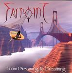

Home Artist links Label link

Farpoint - From Dreaming To Dreaming
| Artist: | Farpoint |
| Title: | From Dreaming To Dreaming |
| Label: | SCM104 |
| Length(s): | 65 minutes |
| Year(s) of release: | 2004 |
| Month of review: | [01/2005] |
Line up
Mike Avins - lead guitar, rhythm guitar
Clark Boone - lead, backing vocals, 12-string guitar
Kevin Jarvis - keys, acoustic and electric guitars, mandolin, vocals
Dana Oxendine - lead, backing vocals, flute
Frank Tyson - bass guitar, vocals
Rick Walker - drums, percussion
Tracks
| 1) | Lux Universum Part I | 0.59
|
| 2) | Autumn Sky | 6.35
|
| 3) | Anything At All | 6.13
|
| 4) | Universal Light | 4.25
|
| 5) | Here And Now | 5.10
|
| 6) | Crying In The Rain | 7.09
|
| 7) | Sojourn | 10.19
|
| 8) | Nothing At All | 5.56
|
| 9) | O Lost | 5.55
|
| 10) | Ashley's Song (sail On) | 7.21
|
| 11) | Lux Universum Part II | 4.13
|
Summary
The music
Autumn Sky is an alternation of Oxendine's penetrating vocals, and the irritating riff played on both guitar and lesleyed organ. To top it off the track is closed off as decisively as early classical music (after the umpteenth attempt).
Anything At All focuses on acoustic guitar and Boone's vocals. The opening of this track is quite different from the previous track. The extra weight on his vocals for the more heavily sung third verse tells in the vocals, alleviated with a guitar solo from which we return to the pre solo pattern. The accompaniment on this track sounds rather sparse, and mixed too far to the back. Boone isn't exactly the world greatest singer, and lacks the charm of other famous non-able singers like Neil Young.
Universal Light starts off with mediocre guitar and synth sounds, although I would almost long for them when Oxendine starts singing. The mid section shows unspectacular soloing and makes the muffled drum sound more audible.
Here And Now alternates the two vocalists, making a good comparison between their voices possible. There is one of those irritating hackneyed guitar riffs there too.
Anyway, you have by now gathered the idea. Every track seems to suffer some general flaws, as well as ones specific to that track.
Conclusion
Oxendine's vocals are definitely not of extreme beauty, being they are hollered more than sung. The hackneyed guitar riffs don't exactly compensate for this, nor do the often tacky key sections. Then of course there is the rather poor production making for both muffled sound and unbalance between assorted instruments. And to top it off, there's the fact that most compositions are uninteresting at best.
I find it hard to say whether this album is just plain awful, or whether it found all the places in which I can be musically irritated. What I can state is that by stepping into the arena with those making progressive music Farpoint is now competing with a great many bands who have better composing skills, better vocalists and better instrumentalists. This makes their name highly eligible for being the one written on the Weakest Link plate. It will be one mine.
www.farpointband.com
© Roberto Lambooy